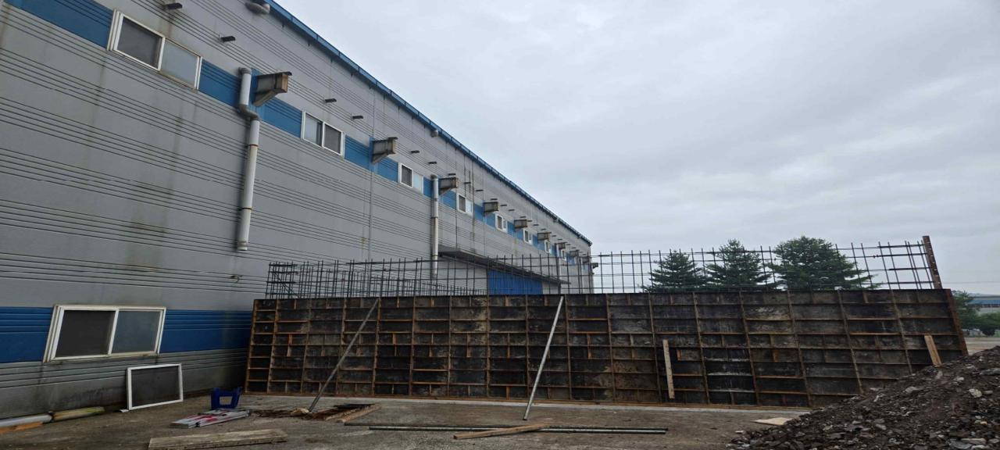
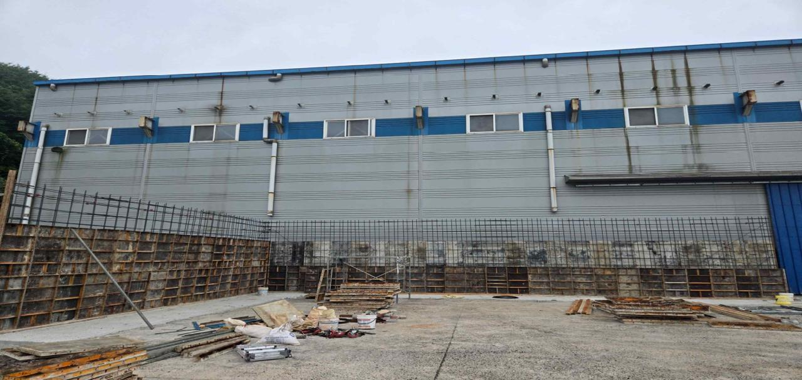
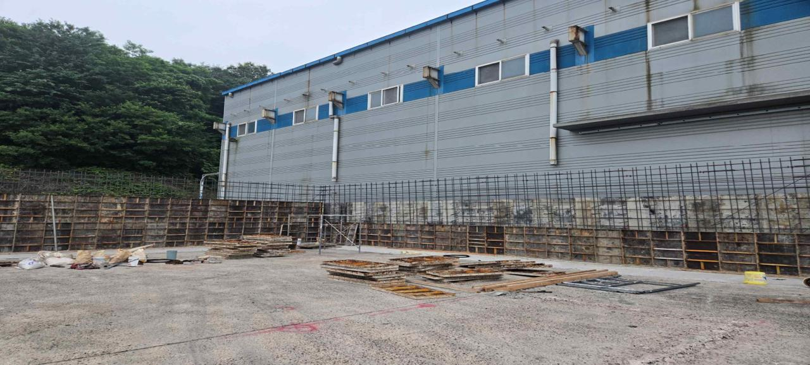
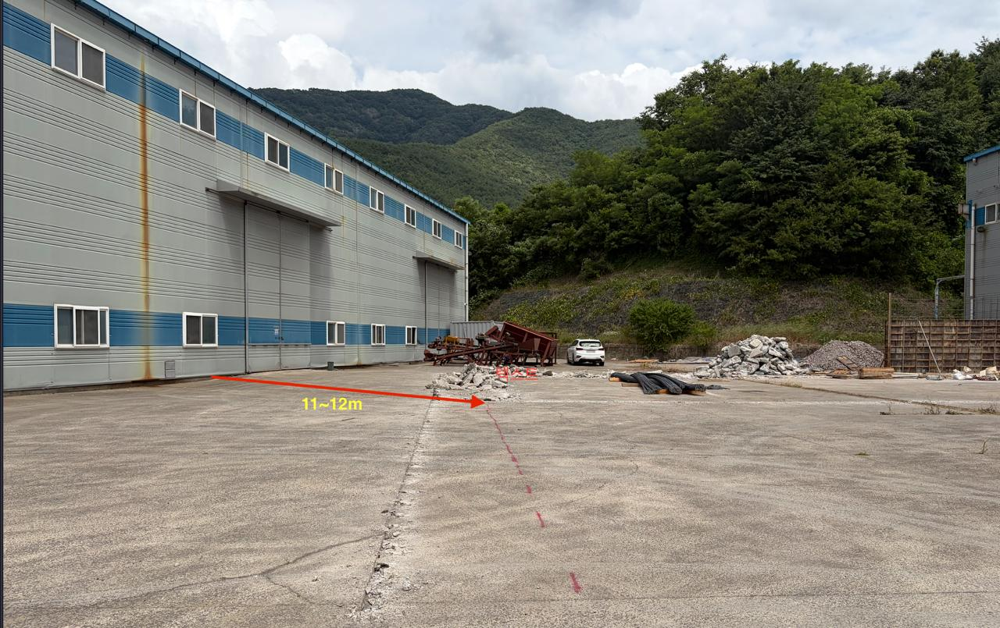
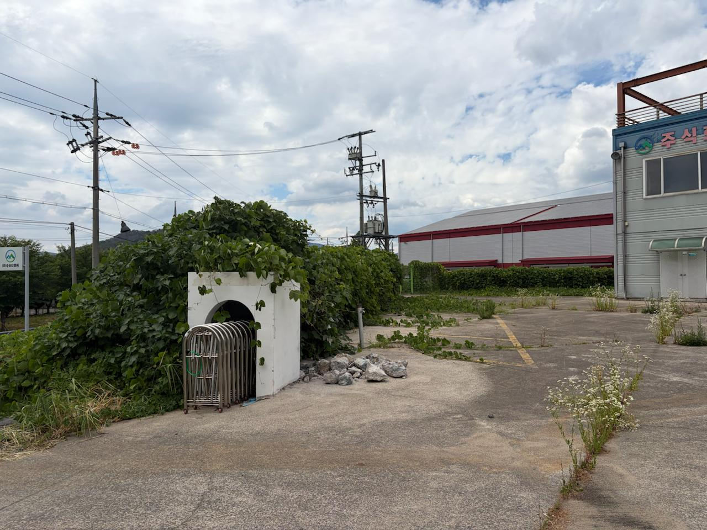
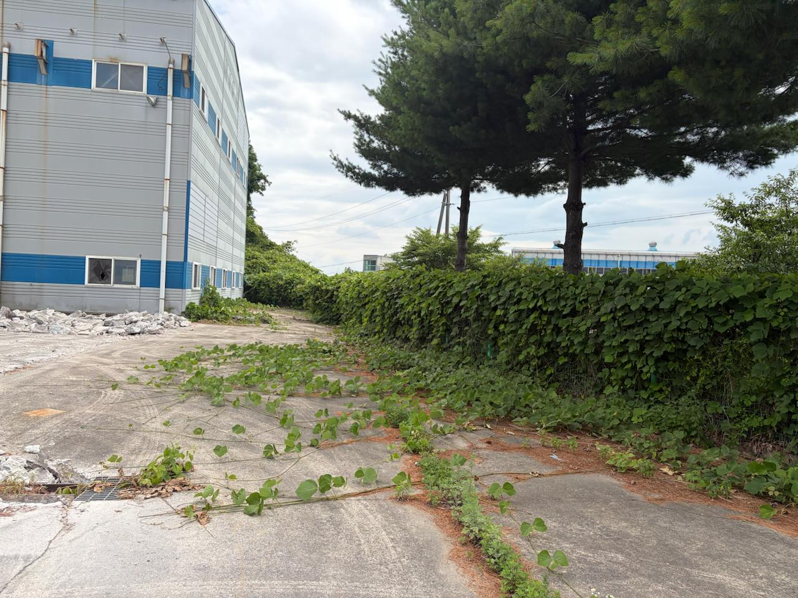

핵심 01
옹벽 A/B 구간 거푸집 진행
공장동 외벽 하부 원료 저장용 외부 옹벽 구간에서 철근 배근 및 벽체 거푸집 설치가 확인된다.
금일은 원료 저장용 외부 옹벽 A/B 구간의 벽체 거푸집 설치가 진행되었고, 차량 통과 폭과 펜스공사 선행 정리 범위가 함께 확인되었다.

오늘 발생한 현장 사실과 검토자가 즉시 확인해야 할 항목이다.
공장동 외벽 하부 원료 저장용 외부 옹벽 구간에서 철근 배근 및 벽체 거푸집 설치가 확인된다.
증축건물 모서리부터 2동 방향 이격거리는 약 11~12m로, 대형덤프 및 트레일러 통과 가능 판단이 기록되었다.
출입구 좌우측과 공장 전체 둘레에 제초·벌목이 필요하며, 장시간 방치된 주변부도 포함된다.
작업 내용, 확인 사항, 관리 포인트를 현장 검토 순서로 정리했다.
| 구분 | 금일 사실 | 현장 검토 포인트 | 상태 |
|---|---|---|---|
| 옹벽공사 | A/B 구간 벽체 거푸집 설치 진행, 철근 배근 및 거푸집 자재 확인 | 거푸집 긴결·버팀, 철근 간격, 수직도, 타설 전 검측 | 진행 확인 |
| 차량동선 | 증축건물 모서리부터 2동 방향 약 11~12m 확인 | 적치물·잔재물 정리, 회전반경, 유도자 배치 | 통과 가능 판단 |
| 펜스 선행작업 | 출입구 좌우측 및 공장 전체 둘레 제초·벌목 지시 | 기준선 확인, 작업공간 확보, 시공 간섭 제거 | 착수 확인 필요 |
| 방수·청소 | 사무동·기술사건물 방수공사 및 청소를 차주 6/23 협의 예정 | 누수부위, 청소범위, 일정 확정 여부 | 일정 협의 |
| 인허가 | 증축허가 및 공장설립인가 보완서류 제출, 위해위험방지계획 대상 확인 포함 | 제출서류 누락, 추가 보완 발생 여부 추적 | 추적 관리 |
현장 사진별 확인 내용과 조치 포인트를 연결했다.

공장 외벽 인접부 벽체 거푸집 설치, 상부 철근 배근 및 자재 확인. 지지·긴결상태와 철근 간격 확인 필요.

기존 공장동 외벽 하부를 따라 거푸집 설치가 이어지는 구간. 타설 전 수직도·간격·버팀재 확인 필요.

산림부 경계 및 공장동 하부 구간의 철근·거푸집 설치와 자재 적치상태 확인. 동선 간섭과 우천 미끄럼 관리 필요.

기존 공장동과 2동 방향 야드 사이 약 11~12m 표기. 실제 진입 전 잔재물·장비·자재 정리와 유도자 배치 필요.

출입구 주변 및 경계부에 잡초와 넝쿨이 확인된다. 펜스공사 전 기준선 확인과 작업공간 확보가 필요하다.

공장동 측면 외곽부와 펜스 예정선 주변 식생 침범 확인. 전체 둘레 제초·벌목으로 시공 간섭을 제거해야 한다.
2026-06-08 Kick-off 미팅 기록에서 이어지는 기준 일정과 오늘 위치이다.
| 기준 항목 | 금일 기록과의 연결 | 검토 판단 |
|---|---|---|
| 펜스공사 착수 | 출입구 좌우측 및 공장 전체 둘레 제초·벌목 지시 | 선행작업 완료 확인 필요 |
| 방수공사 | 사무동·기술사건물 방수공사 및 청소 6/23 협의 예정 | 차주 일정 확정 필요 |
| 인허가 병목 | 증축허가 및 공장설립인가 보완서류 제출 관리 | 추가 보완 여부 추적 |
| 후속 반입 준비 | 대형덤프·트레일러 통과 가능 폭 확인 | 동선 정리 조건부 가능 |
현재 남아 있는 차단 요인과 현장 조치 방향이다.
현장 검토자가 체크할 다음 조치 목록이다.
회의 또는 현장 공유 시 바로 읽을 수 있는 압축 브리핑이다.
검토자가 발견한 누락, 오류, 보완 요청을 복사해 후속 작성에 사용할 수 있다.
| 검토 체크리스트 | 판정 |
|---|---|
| 오늘 작업과 사진 증거가 연결되어 있는가? | 검토 |
| 기준 일정 대비 확인 필요 항목이 표시되어 있는가? | 확인 |
| 타설 전 검측 포인트가 명확한가? | 중요 |
| 차량동선, 펜스 선행작업, 인허가 추적이 다음 조치에 반영되었는가? | 확인 |
Leave a public GitHub comment or reaction below.